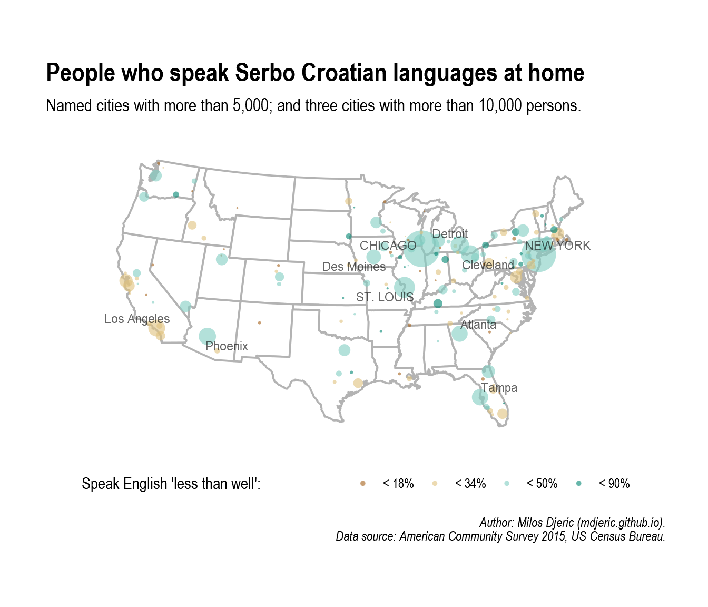
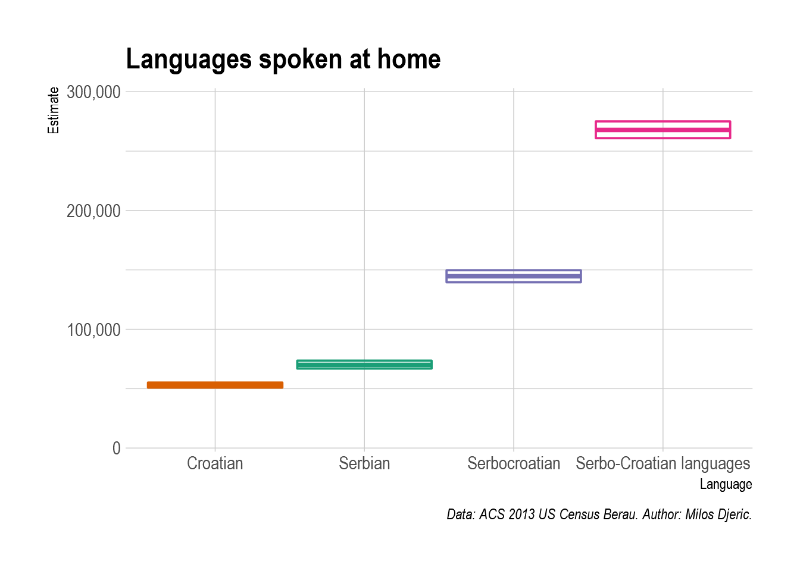
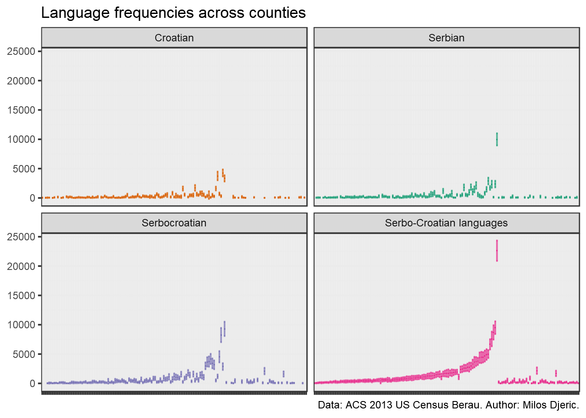
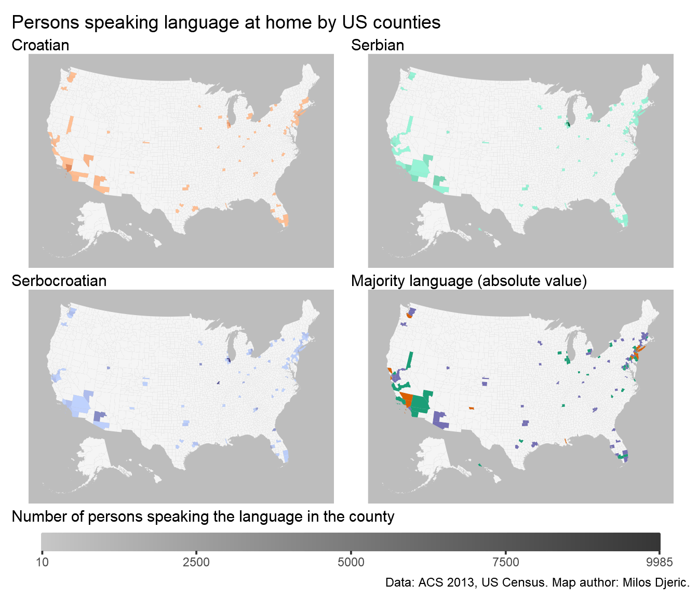

In general, estimates of diaspora from the region of former Yugoslavia vary greatly depending on authors and methodology. For example, 2011 Serbian Census estimates 290,000 citizens, 2002 Serbia is considered to be a state with very large emigration, numbering from 290,000 citizens according to preliminary data from 2011 State Census, 415,000 according to 2002 State Census, while various estimates are between 3.5 and 4 million. Ministry of Foreign Affairs estimates up to 1.5 million of citizens and 4.5 million of Serbs.
US Census Beurau conducts American Community Survey, and provides estimates for various parameters. Intrestingly, “Serbo Croatian languages” as a group are included in yearly 3 and 5 year estimates of languages persons speak at home, while 2013 special language estimate also includes breakdown to Serbian, Croatian, and Serbocroatian. In answering these questions persons were able to select multiple languages, so there is a certain overlap in sense that persons were identified as speaking more than one of the three political languages from Serbo-Croatian language.
However, what is exceptionally interesting about this data is the very high number of pepole who identify the language they speak at home directly as “Serbocroatian”, a common name for the language that was used in Socialist Federal Republic of Yugoslavia. Cleraly, Bosnian is classified in this group of languages - which can be infered from the high number of speakers in St Louis. Even taking this into account, Serbocroatian is extremly frequent among the diaspora from former Yugoslavia, indicating that perhaps almost 30 years after its breakup it still lives in the US diaspora.



